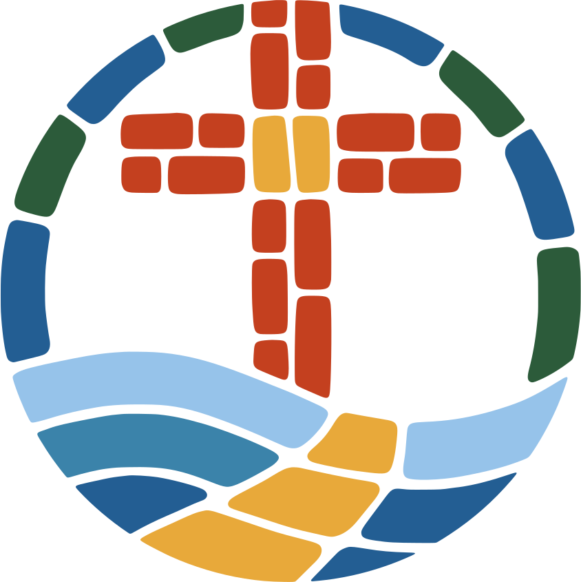

What a Sunday is like
Come as you are and sit wherever you like. We sing, we pray, and we open the Bible together. Draft
What happens for children, and how long the service runs, goes here once the church confirms it.
Your first visitWe are a Southern Baptist family on Hamilton-Scipio Road. Come as you are this Sunday; someone will meet you at the door.
Plan your visitWatch a message
Come as you are and sit wherever you like. We sing, we pray, and we open the Bible together. Draft
What happens for children, and how long the service runs, goes here once the church confirms it.
Your first visitA short welcome in the pastor's own words goes here: who he is, why he loves this church, and what he hopes a first-time guest will find. Two or three sentences, written with him.
Pastor and leadershipEvery message is streamed live on Facebook and TikTok, and the latest one is always here.